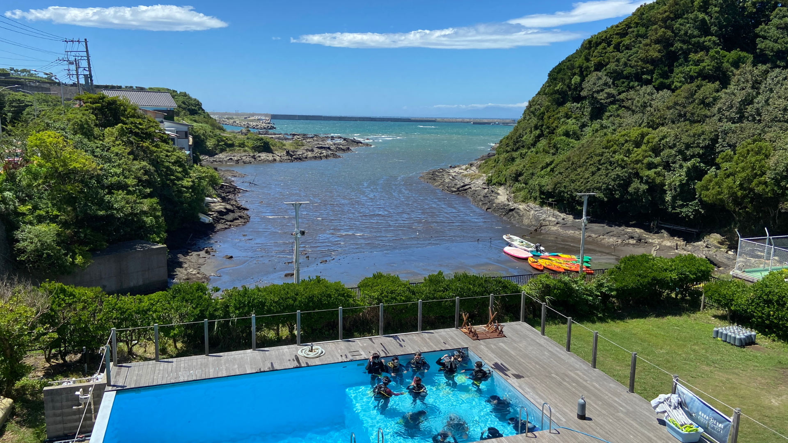
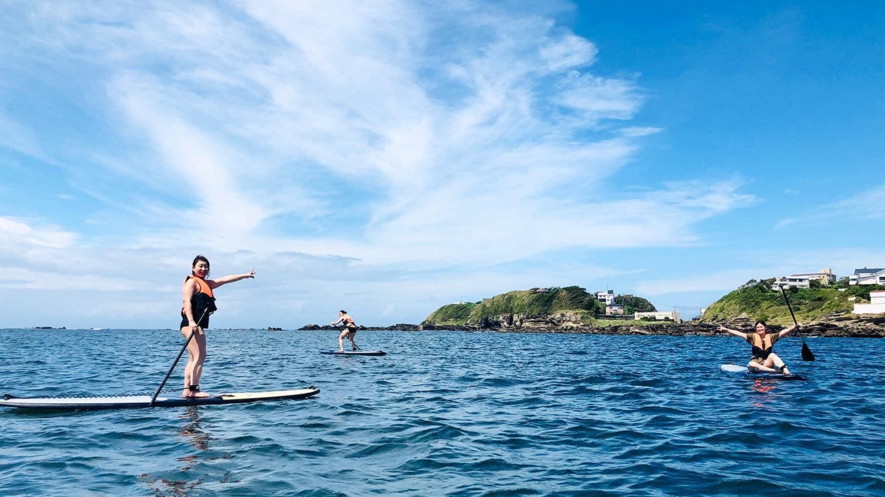

海の学校で
できること
初心者ダイバーからシニアダイバーまで、年齢制限なし。
スクーバダイビング（スキューバダイビング）のCカード取得、
アドバンス講習、SUP、スノーケリングまで少人数制で丁寧指導。
 人気 No.1
人気 No.1
🤿 ダイビングライセンス（Cカード取得）
PADIオープンウォーターからアドバンス講習・プロコースまで。スクーバダイビングのCカードを専用プールで基礎から安心して取得。初心者・シニアも歓迎。
詳しく見る →
📍 横須賀からお越しの方へ
久里浜から電車11分、横須賀中央から21分。三崎口駅から無料送迎あり。横須賀エリアから最も近いダイビングスクールです。
詳しく見る →
🐠 ファンダイビング
Cカード保持者向け。三浦半島・横須賀エリアの多彩なダイビングポイントで四季折々の海を満喫。
詳しく見る →
🏄 マリンアクティビティ
SUP（スタンドアップパドル）・スノーケリング（シュノーケリング）・シーカヤック。ダイビングライセンス不要で気軽に三浦の海を楽しめます。
詳しく見る →三浦 海の学校が
選ばれる理由
初心者ダイバー・シニアダイバーが安心してダイビングを楽しむための環境がそろっています。
神奈川・三浦半島で少人数制のダイビングスクールをお探しの方に。
お客様の声
たくさんの「楽しかった！」をいただいています。
泳げない私でもライセンスが取れました！プールで何度も練習できたのが本当に良かったです。スタッフの皆さんがとても優しく丁寧でした。
友達と初めてのSUP体験！海の上に立てた時は最高に楽しかった。インストラクターの方が写真もたくさん撮ってくれて大満足です♪
10年ぶりのダイビングでしたが、丁寧なブリーフィングで安心して潜れました。三浦の海は想像以上にきれいで、また来たいです！
よくある質問
初めての方からよくいただく質問をまとめました。
初心者でもダイビングライセンスは取得できますか？
ライセンス取得にかかる期間はどれくらいですか？
一人でも参加できますか？
料金にはどのような費用が含まれていますか？
冬でもダイビングはできますか？
年齢制限はありますか？
出版書籍のご案内
代表・吉田が執筆したダイビング＆マリンアクティビティ関連書籍。
Amazon (Kindle / 紙) で好評発売中！


他にも絵本、マリンアクティビティ本、AI関連書籍など12冊以上を出版中！ → Amazonで全書籍を見る
海への第一歩を
踏み出そう
お気軽にご相談ください。
スタッフが丁寧にお答えします。
最新情報をチェック
Instagram・Facebookで最新の海の様子やイベント情報を配信中！
今週のダイビングコンディション
諸磯エリアの天気・風・波を元に、ダイビングのしやすさを自動判定しています。
天気データを読み込み中…
※ 判定はあくまで目安です。実際の催行はスタッフが当日の海況を確認して判断します。
アクセス
東京から約60分。三浦の青い海があなたを待っています。
三浦 海の学校について
三浦 海の学校は、神奈川県三浦市・三浦半島に位置するPADI公認5スターIDCセンターのダイビングスクールです。スクーバダイビング（スキューバダイビング）のCカード（ライセンス）取得をはじめ、体験ダイビング、ファンダイビング、アドバンス講習（アドバンスドオープンウォーターダイバーコース）、レスキューダイバーコース、プロフェッショナルコースなど、PADIの全コースを開講しています。
都心・横浜から約60分、横須賀からもアクセスしやすい立地で、専用ダイビングプールを完備。初心者ダイバーはもちろん、シニアダイバーや高齢の方でも安心して参加できる少人数制の丁寧な指導が特長です。年齢制限はなく、10歳からご参加いただけます。
ダイビング以外にも、SUP（スタンドアップパドルボード）、スノーケリング（シュノーケリング）、シーカヤックなどのマリンアクティビティもご用意。ダイビングライセンス不要で、三浦半島の美しい海を気軽にお楽しみいただけます。
神奈川でダイビングライセンスを取得したい方、三浦半島・横須賀エリアでダイビングスクールをお探しの方、ブランクのあるダイバーの方のリフレッシュダイビングも承っております。まずはお気軽にお問い合わせください。